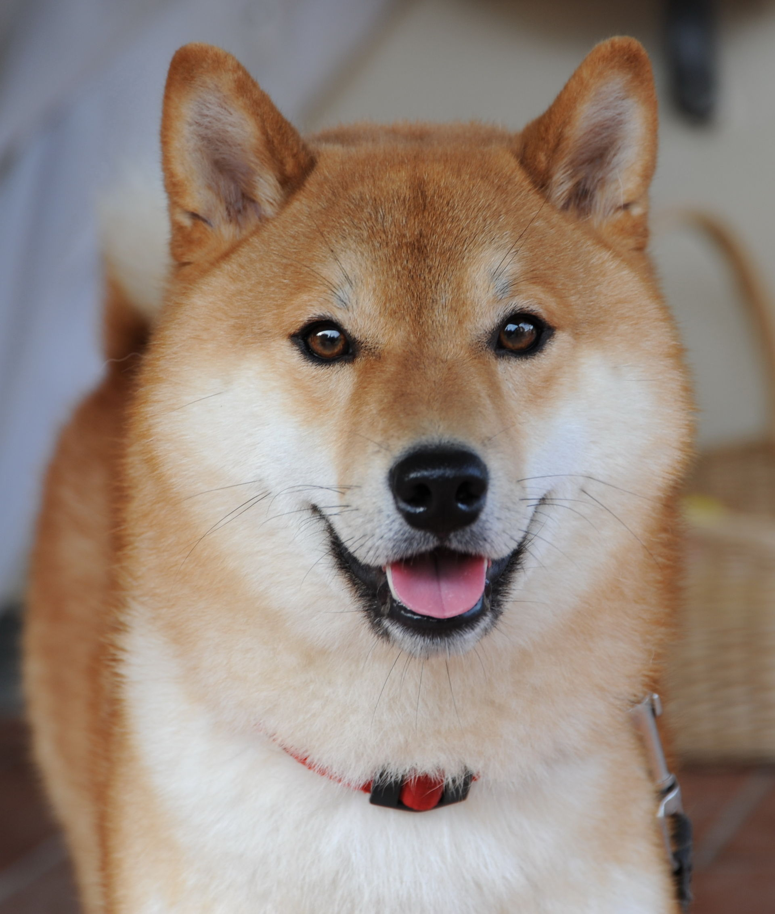

Spitfyre Shiba Inu
Spitfyre Shiba Inu
About Us
We are a loving family living in the north woods of Minnesota. There is my husband and me and our six kids. Two of which are already grown and moved out but live nearby, two in the process of moving out and two youngsters. We also have a son in law and two grandkids and a daughter in law and 4 adopted grandkids. We have been a longtime Minnesota Shiba Inu Breeder with Top Quality AKC Shiba Inu Puppies since 1992. All my adults are AKC Registered & CH Pedigreed. We have plenty of love for our dogs and their pups. We spend much of our time working with the dogs and spending time as a family. We are family owned and operated and make it our mission to connect great people with a great new Shiba Inu.
Here at Spitfyre Shiba Inu, our puppies have a lifetime guaranteed and are out of OFA health tested parents. Each puppy is raised with other others, cats, and children.
We have been breeding top quality AKC shiba inu puppies since 1992. All of the adults are AKC Registered and Pedigreed.
I believe in top quality breeding which means excellent bloodlines and selective breeding goes into each and every breeding.
I only put adults together who will complement each other and create less chance of faults.
I have an excellent history of health in my Shiba Inu. All of my Shiba Inu puppies and adults, are always kept up to date on vaccinations and wormings.
Top of the line vaccines are used and no corners are cut to give optimum coverage. I have had a successful health history along with no reports or cases of
Hip Dysplasia or Genetic Eye problems.
We thoroughly love and enjoy Shiba Inu and we strive to produce quality, healthy, and sound, Shiba Inu Puppies as family companions as well as show/agility/and obedience prospects.
My Shiba Inu Puppies are my best friends. They receive the best care and loving attention at all times. My Shiba Inu are kept in either my home or a heated/air conditioned kennel and some
live with friends or relatives full time.